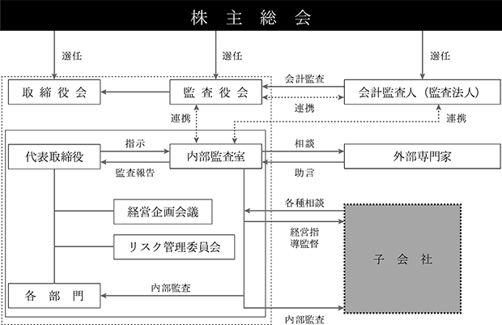

（注）発行株式の総数は、自己株式58,200株を含んでおります。
該当事項はありません。
該当事項はありません。
③ 【その他の新株予約権等の状況】
該当事項はありません。
該当事項はありません。
(注１) 第４回新株予約権の権利行使による増加
(注２） 株式会社大都商会との簡易株式交換による増加
(注３) 第６回新株予約権の権利行使による増加
(2024年１月31日現在)
(注) １ 自己株式58,200株は、「個人その他」に582単元が含まれております。
２ 「その他の法人」の中には、証券保管振替機構名義の名義書換失念株式が１単元含まれております。
(6) 【大株主の状況】
(2024年１月31日現在)
(注)１.前事業年度末現在で主要株主および主要株主である筆頭株主であった株式会社ＤＭＭ.ｃｏｍ証券は、当事業
年度末では主要株主および主要株主である筆頭株主ではなくなり、鄧 明輝氏が新たに当社の主要株主および
主要株主である筆頭株主となりました。
２.発行済株式（自己株式を除く。）の総数に対する所有株式数の割合は、小数点第三位を切り捨てております。
(2024年１月31日現在)
(注)「完全議決権株式(その他)」の欄には、証券保管振替機構名義の名義書換失念株式が100株およびそれに係る
議決権の数１個が含まれております。
(2024年１月31日現在)
該当事項はありません。
該当事項はありません。
該当事項はありません。
当社は、利益配当に関して、利益に応じた適正な配当政策を基本としており、株主の皆様への利益還元を最重要課題と位置付けております。配当は、今後の事業展開を勘案し財務体質および経営基盤の強化を図りながら実施していく方針であります。
当社の剰余金の配当は、期末配当の年１回を基本的な方針としております。配当の決定機関は、期末配当は株主総会であります。なお、定款で取締役会の決議により中間配当を行うことができる旨を定めております。
当期の期末配当は、親会社株主に帰属する当期純損失を394,067千円計上しましたので、誠に遺憾ながら無配とさせて頂きました。今後におきましては、事業の効率化および継続的な事業拡大、財務体質、経営基盤を強化し、株主各位への配当を再開出来るよう邁進していく所存であります。
当社は、企業価値の向上およびステークホルダーに対する経営の透明性を高めるため、コーポレート・ガバナンスを経営上の重要課題と位置づけております。そして、コーポレート・ガバナンスを適切に機能させ、公正性と透明性の高い事業活動を行うことで、社会的責任を果たすことができるものと考えております。
本書提出現在における当社の経営組織その他コーポレート・ガバナンス体制の模式図は以下のとおりであります。

（ⅰ)企業統治の体制の概要
ａ．取締役会
当社では、経営の執行に関し、迅速な経営判断を行うため取締役４名で構成しており、定時取締役会を原則月１回開催し、必要に応じて臨時で取締役会を開催しております。
取締役会では、法令および定款に定められた事項のほか、経営方針及び業務執行に関する事項を決議しております。取締役会の構成メンバーは、次のとおりです。
議 長：代表取締役社長 鄧明輝
構成員：取締役 塚本雄三、取締役 半田紗弥、社外取締役 下村昇治
ｂ．監査役会
当社は、経営に対する監査の強化を図るため、会社の期間として監査役３名で構成された監査役会を設置しております。監査役会は、原則、３ヵ月に１回開催し、監査役による監査の向上を図っております。また、監査役は取締役会に出席し、必要に応じて意見を述べております。監査役会の構成メンバーは、次のとおりです。
議 長：常勤監査役 根本佳明
構成員：社外監査役 呂娟、社外監査役 中村卓哉
ｃ．経営企画会議
当社および当社子会社の業務執行に関する重要な日常業務の執行ならびに報告を行うための経営企画会議を設けております。主要構成メンバーは、次のとおりです。
議 長：代表取締役社長 鄧明輝
構成員：取締役 半田紗弥、その他議長が必要と認めた部・室長等
ｄ．内部監査室
当社は、独立した組織として内部監査室を設置しております。内部監査室は、法令、定款および社内諸規程に準拠して、業務および会計手続きが執行されているかを監査しております。内部監査結果は経営企画会議担当および対象部署関係者に対して報告され、改善の必要性がある項目については、改善指示を行っております。
ｅ．リスク管理委員会
リスク管理委員会は、会社全体に係るリスク管理について検討および審議を行い、当該審議の内容および結果を取締役会に報告しております。リスク管理委員会の構成メンバーは、次のとおりです。
議 長：代表取締役社長 鄧明輝
構成員：取締役 半田紗弥、その他議長が必要と認めた部・室長等
（ⅱ)企業統治の体制を採用する理由
当社は、企業規模を鑑み、経営判断の迅速性・効率性の最大化を重視しておりますが、社外取締役１名、社外監査役２名を選任することにより、経営の透明性と公正性も維持しており、実効性のある体制であると判断しております。
ａ．取締役の定数
当社の取締役は15名以内とする旨を定款で定めております。
ｂ．取締役の選任決議要件
当社は、取締役の選任決議について、議決権を行使することができる株主の議決権の３分の１以上を有する株主が出席し、その議決権の過半数をもって行う旨定款に定めております。
また、取締役の選任決議は、累積投票によらないものとする旨定款に定めております。
ｃ．監査役の選任決議用件
当社は、監査役の選任決議について、議決権を行使することができる株主の議決権の３分の１以上を有する株主が出席し、その議決権の過半数をもって行う旨定款に定めております。
また、監査役の選任決議は、累積投票によらないものとする旨定款に定めております。
当社は、会社法第309条第２項に定める株主総会の特別決議要件について、議決権を行使することができる株主の議決権の３分の１以上を有する株主が出席し、その議決権の３分の２以上をもって行う旨を定款に定めております。これは、株主総会における特別決議の定足数を緩和することにより、株主総会の円滑な運営を行うことを目的とするものであります。
ｅ．中間配当制度の採用
当社は、会社法第454条第５項の規定により、取締役会の決議によって毎年７月31日を基準日として中間配当を行うことができる旨定款に定めております。これは、株主への機動的な利益還元を可能にするためであります。
ｆ．内部統制システムの整備状況
当社は、会社法の規定に従い、取締役会等により職務の執行が効率的に行われ、法令・定款に適合することを確保するための体制の整備および運用の徹底に努めております。監査役および内部監査室は、取締役の経営意思決定および業務執行における法令等の遵守状況の監督を行うと共に、各部署の社内諸規定に基づく業務執行の遵守状況の監督も実施しております。
ｇ．リスク管理体制の整備状況
「コンプライアンス規程」や「リスク管理規程」を設定し、当社グループのコンプライアンスおよびリスク管理については、企業の社会的責任を自覚し、法令を遵守しながら、事業活動を行っております。
ｈ．子会社の業務の適正を確保するための体制整備の状況
当社は、子会社の業務の適正を確保するため、「関係会社管理規程」を設定し、職務執行に係る重要な事項の報告を義務付ける等、指導、監督を行っております。
i. 役員等賠償責任保険（Ｄ＆Ｏ保険）の内容の概要
当社は、2014年10月２日以降の取締役、監査役を被保険者として、会社法等430条の３第１項に規定する役員等賠償責任保険（Ｄ＆Ｏ保険）契約を締結しております。当該保険により、被保険者が負担することになる株主代表訴訟、第三者訴訟、会社訴訟の訴訟費用および損害賠償金を補填することとしており、保険料は全額会社が負担しております。故意または重過失に起因する損害賠償請求は上記保険契約により填補されません。
男性
(注)１．取締役、塚本雄三氏は代表取締役社長鄧明輝の２親等以内の親族にあたります。
下村昇治氏は、社外取締役であります。
２. 監査役 呂娟氏、中村卓哉氏は、社外監査役であります。
３. 取締役の任期は、2024年４月26日開催の定時株主総会終結の時から2025年１月期に係る定時株主総会終結の時までであります。
４. 監査役である根本佳明氏、呂娟氏および中村卓哉氏の任期は、2024年４月26日開催の定時株主総会終結の時から2028年１月期に係る定時株主総会終結の時迄であります。
５．当社は、法令に定める監査役の員数を欠くことになる場合に備え、会社法第329条第３項に定める補欠監査
役１名を選任しております。補欠監査役の略歴は次のとおりであります。
ａ．社外取締役および社外監査役の人数
本書提出日現在において、当社は、当社と異なるバックグラウンドにおける経営経験や専門的知見から公平な助言、監督及び監査いただき、当社の企業価値向上に貢献いただくために、社外取締役１名および社外監査役２名を選任しております。
ｂ．社外取締役および社外監査役と提出会社との人的関係、資本的関係および取引関係
社外取締役下村昇治氏は、税理士としての専門的な知識・経験等を有しており、当社とは利害関係のない見地から、適切な指導をいただけると判断したため、社外取締役として選任しております。なお、同氏と当社の間には人的関係、資本的関係または重要な取引関係その他の利害関係はありません。
社外監査役呂絹氏は、日中両国のビジネスに豊富な経験および高度な知識を有していることから、適切な助言をいただくことが期待できると判断したため、社外監査役として選任しております。なお、同氏と当社の間には人的関係、資本的関係または重要な取引関係その他の利害関係はありません。
社外監査役中村卓哉氏は、大日本印刷株式会社において、印刷事業とりわけエレクトロニクス・エネルギー事業を主とした事業開発、マーケティング、企画分野に精通しており、豊富な経験と高い見識を有することから、適切な助言をいただくことが期待できると判断し、社外監査役として選任しております。なお、同氏と当社の間には人的関係、資本的関係または重要な取引関係その他の利害関係はありません。
ｃ．社外取締役または社外監査役の提出会社からの独立性に関する考え方
当社は、社外取締役または社外監査役を選任するための独立性に関する基準または方針はありませんが、選任にあたっては東京証券取引所の定める独立役員の独立性に関する事項を参考にしています。
社外取締役の下村昇治氏を東京証券取引所の定めに基づく独立役員として指定し、同取引所に届け出ております。
ｄ．社外取締役または社外監査役の選任状況に関する提出会社の考え方
取締役は業務執行の迅速化を図るため、業務執行を担当する社内の常勤取締役が過半数を占めております。一方、監査役は、より適正な監査および監視の構築を図るため、社外監査役が過半数を占めております。業務執行とガバナンスの双方の要求を満たす選任状況であると考えております。
③ 社外取締役または社外監査役による監督又は監査と内部監査、監査役監査及び会計監査との相互連携ならびに内部統制部門との関係
社外取締役は、取締役会に出席し、取締役会における監査役の意見などを踏まえて意見を述べること等により、業務執行から独立した立場からの経営監督機能を果たしております。
社外監査役は、取締役会や監査役会に出席し、客観的かつ独立的な立場から意見を述べるほか、会計監査人と定期的に情報交換を行い、監査機能の強化に努めております。
(3) 【監査の状況】
① 監査役監査の状況
当社の監査役会は３名で構成され、常勤監査役１名に、非常勤監査役２名であります。監査役全員は監査役会で定められた監査方針、監査計画に基づき、取締役会への出席を通じ、取締役等から業務執行の報告を受け、職務執行の適正や効率性の監査を行っております。内部監査室が行った監査の報告を受けるほか、会計監査人とは、四半期ごとに会計監査の報告を受け、適宜意見交換を行っております。
当事業年度において、当社は監査役会を原則、３ヵ月に１回開催しており、個々の監査役の出席状況については次のとおりであります。
監査役会における主な共有・検討事項は以下のとおりであります。
a. 監査役会は、監査方針、役割分担および監査項目等からなる監査計画を定め、取締役の職務執行を監査しております。また、年度ごとに注視すべき経営課題を「重点監査項目」として定め、必要に応じて担当取締役等に監査役会での報告を求めるなど、重点的に監査を行っております。
b. 監査役会は、会計監査人より監査計画・重点監査項目・監査状況等の報告を受け情報交換を図るとともに、会計監査および内部統制監査について相互連携を図っております。また、会計監査人の職務遂行状況、監査体制、独立性および専門性などが適切であるかについて確認しております。
常勤監査役の主な活動状況は以下のとおりであります。
a. 常勤監査役は重要な決裁書類を閲覧し、決裁プロセス上の不備や不適切な判断に対し指摘等を行っております。
b. 常勤監査役は監査調書を作成し監査役会に報告し、社外監査役に詳細に説明しております。
② 内部監査の状況
当社は内部監査部門として内部監査室を設置しており、「内部監査規程」に基づき業務監査を中心とする内部監査を行っております。監査結果は直轄の代表取締役社長に報告されます。また、問題点については該当部署に改善を求め、改善状況のフォローを実施しております。なお、これら内部監査に係る状況につきましては、監査役会および会計監査人に対しても報告を行い、監査結果に関する情報交換を行っております。
③ 会計監査の状況
a．監査法人の名称
監査法人アリア
b．継続監査期間
３年間
c．業務を執行した公認会計士
代表社員 業務執行社員 茂木 秀俊
代表社員 業務執行社員 山中 康之
d．監査業務に係る補助者の構成
公認会計士３名、その他５名
e．監査法人の選定方針と理由
監査法人アリアを選任した理由は、同監査法人は長年にわたる企業会計監査の実績を有し、会計監査人として必要な専門性、独立性、監査活動の適切性を具備し、当社の事業活動を一元的に監査する体制を整えていると判断したためであります。
会計監査人に会社法第340条第１項各号のいずれかに該当する事由が認められた場合は、監査役会が監査役全員の同意により会計監査人を解任いたします。また、監査役会は、会計監査人の職務の執行に支障がある場合等、その必要があると判断した場合は、会計監査人の解任または不再任に関する議案を決定し、取締役会は、当該決定に基づき当該議案を株主総会に提案することとしております。
ｆ．監査役会による監査法人の評価
当社の監査役会は、監査法人との定期的な意見交換を通じて、専門性、独立性、品質管理体制について総合的に評価検証を行っております。監査計画から監査の手続きの内容について評価した結果、監査法人アリアが当社の会計監査人として選任することが適当であると判断しております。
④ 監査報酬の内容等
ｂ．監査公認会計士等と同一ネットワークに属する組織に対する報酬（a.を除く）
該当事項はありません。
c. その他重要な監査証明業務に基づく報酬の内容
該当事項はありません。
d．監査報酬の決定方針
当社の監査法人に対する監査報酬の決定方針としましては、事前に見積書の提示を受け、監査日数、監査内容および当社の規模等を総合的に勘案し、両者で協議を行った上で決定し、監査役会で同意を得るものとしております。
e．監査役会が会計監査人の報酬等に同意した理由
監査役会は、日本監査役協会が公表する「会計監査人の連携に関する実務指針」を踏まえ、会計監査人監査の計画の範囲、内容の適切性および妥当性について検討を行った上で、会計監査人の報酬については、会社法第399条第１項の同意を行っております。
(4) 【役員の報酬等】
① 役員の報酬等の額又はその算定方式の決定に関する方針に係る事項
（ⅰ）取締役の報酬等の決定に関する基本方針
持続的な成長および中長期的な企業価値の向上のため、当社の取締役の報酬等は、各取締役に期待する役割・機能、各期の業績、貢献度、職務遂行に係る時間等を適切に反映した取締役報酬水準であること、および、持続的成長に不可欠な人材を確保できる報酬とすることを基本方針としております。
監査役の報酬等は、株主の負託を受けた独立の機関として取締役の職務の執行を監査するという独立した立場から、その役割と責務に相応しい監査役報酬水準や報酬慣行等となること、かつ、優秀な人材の確保に配慮した体系としております。
また、取締役および監査役の報酬総額は、2023年４月28日の定時株主総会の決議により、取締役に付き年額7,000万（うち社外取締役分は500万円以内）、監査役に付き年額3,000万円（うち社外監査役分は500万円）となっております。
（ⅱ）基本報酬（金銭報酬）の個人別の報酬等の額の決定に関する方針（報酬等を与える時期または条件の決
定に関する方針を含む。）
取締役個人別の報酬額の算出については、代表取締役に一任した旨が2019年４月26日開催の定時株主総会後に同日開催された取締役会にて決議されております。代表取締役は、各取締役に期待する役割・機能等に対する各取締役の報酬に関する内容および各期の業績、各取締役の貢献度、職務遂行に係る時間等を考慮した算出根拠等が、適切に各取締役の報酬へ反映されるように、社外取締役に諮問し答申を得た上で最終的に決定するものとしております。代表取締役に一任した理由として、当社グループの業績を俯瞰しつつ、各取締役の職責を客観的に評価できる立場であると判断し、決定しております。また、監査役の報酬額につきましては、監査役の協議にて決定しております。
（ⅲ）金銭報酬の額、業績連動報酬等の額または非金銭報酬等の額の取締役の個人別の報酬等の額に対する割
合の決定に関する方針
金銭報酬のみとしております。
取締役、社外取締役ともに、役割・機能、職責の大きさ、貢献度、職務遂行に係る時間等に応じた役位ごとの固定報酬のみとし、固定報酬を12等分した定額を毎月金銭にて支給しております。
また、固定報酬の改定は、役位や役割が変更する場合、業績および経営環境を鑑みて実施することを基本とし、改定時期は毎年定時株主総会終結の翌月としております。
② 当事業年度の提出会社の役員の報酬等の額の決定過程における、提出会社の取締役会および監査役会等の
活動内容
当事業年度に係る役員の個人別報酬等の内容について、2019年４月26日付け取締役会で決議された決定方針に従い、代表取締役社長 鄧明輝が当社第40期期初において算出した報酬額を社外取締役に諮問し、2023年４月28日付けの取締役会開催日までに、社外取締役から、当社取締役の報酬等の決定に関する基本方針に沿ったものである旨の答申を得た上で、代表取締役社長 鄧明輝により最終的に取締役および監査役の個人別報酬額が決定されていることから、取締役会はその内容が決定方針に沿うものであり相当であると、2023年４月28日に開催された取締役会において判断しております。なお、社外取締役からの答申内容については時宜にかなったものであり、同取締役会において特に異論はありませんでした。
③ 役員区分ごとの報酬等の総額、報酬等の種類別の総額および対象となる役員の員数
(注) １．当社では、取締役および監査役の報酬総額は、2023年４月28日開催の定時株主総会の決議により、取締役の報酬額を年額7,000万円以内（うち、社外取締役分は500万円以内）、監査役の報酬額を年額3,000万円以内（うち、社外監査役分は500万円以内）としております。また、当該定時株主総会終結時の取締役の員数は、４名（うち、１名は社外取締役）、監査役の員数は３名となっております。
２．監査役３名のうち、１名は株式会社大都商会より当事業年度に1,510千円の報酬を得ております。
３．取締役の支給額には、使用人兼務取締役の使用人分給与は含まれておりません。
４．取締役報酬および監査役報酬は、固定報酬であり、業績連動報酬等、非金銭報酬等はありません。
連結報酬等の総額が１億円以上である者が存在しないため、記載しておりません。
⑤ 使用人兼務役員の使用人分給与のうち、重要なもの
該当事項ありません。
(5) 【株式の保有状況】
該当事項はありません。
該当事項はありません。
③ 特定投資株式およびみなし保有株式の銘柄ごとの株式数、貸借対照表計上額等に関する情報
該当事項はありません。